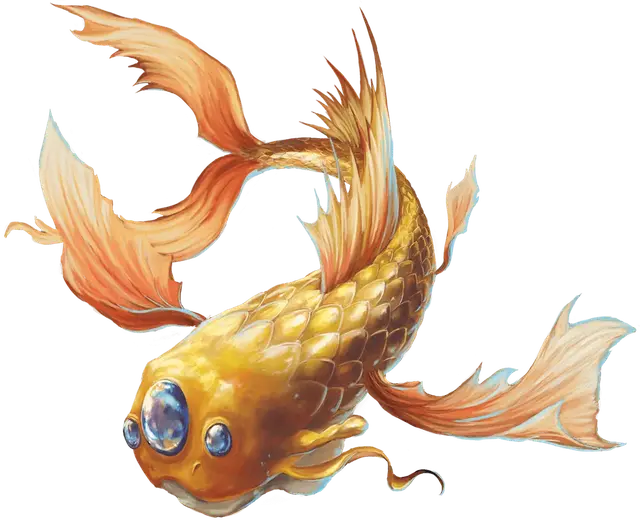

Космическая гуппи
Space Guppy
Маленький Зверь, без мировоззрения

Класс Доспеха 13
Хиты 3 (1к6)
Скорость 0 футов, летая 30 футов
| мод | спас | ||
|---|---|---|---|
| СИЛ | 3 | −4 | −4 |
| ЛОВ | 16 | +3 | +3 |
| ТЕЛ | 10 | +0 | +0 |
| мод | спас | ||
|---|---|---|---|
| ИНТ | 1 | −5 | −5 |
| МДР | 10 | +0 | +0 |
| ХАР | 1 | −5 | −5 |
Чувства тёмное зрение 60 футов, пассивное Восприятие 10
Опасность 0
Бонус мастерства +2
Особенности
Воздушная оболочка. Если у гуппи есть хотя бы 1 хит, она может производить вокруг себя воздушную оболочку, находясь в вакууме. Эта воздушная оболочка может неограниченно долго поддерживать гуппи и еще одно Крошечное существо в его пространстве.
Пролёт. Гуппи не провоцирует атаки, когда вылетает из досягаемости врага.
Действия
Шлепок хвостом. Рукопашная атака оружием: +5 к попаданию, досягаемость 5 фт., одна цель. Попадание: 1 дробящего урона.
Описание
Космические гуппи — это похожие на рыб существа длиной от 2 до 3 футов, обитающие в Диком космосе и Астральном море. Чвинга-астронавты, спрайты и другие Крошечные существа иногда используют космических гуппи в качестве ездовых животных.